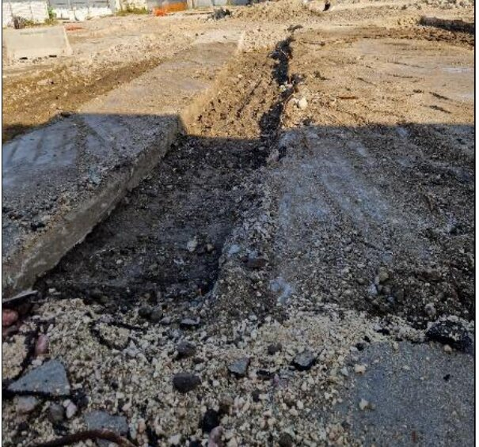

Cos'è e quando serveMateriali contenenti amianto: un rischio che dipende dallo stato, non solo dalla presenza
L'amianto è pericoloso non perché sia presente in un edificio, ma perché in certe condizioni rilascia fibre respirabili che, una volta inalate, restano nei tessuti polmonari e possono innescare, a distanza di decenni, patologie come l'asbestosi, il mesotelioma pleurico e alcune neoplasie polmonari. Questo meccanismo di rilascio dipende dallo stato del materiale: una copertura in cemento-amianto integra, non lavorata e non degradata, cede fibre in quantità trascurabile; la stessa copertura fessurata, erosa dagli agenti atmosferici o soggetta a lavorazioni meccaniche (forature, tagli, sabbiature) può diventare una sorgente attiva di dispersione. È per questo che l'intera disciplina della bonifica amianto ruota attorno alla valutazione dello stato di conservazione, non alla semplice presenza del materiale.
La distinzione più rilevante è tra amianto compatto — lastre di copertura, tubazioni in cemento-amianto, pavimenti in vinil-amianto — che rilascia fibre solo se danneggiato meccanicamente, e amianto friabile — coibentazioni di caldaie e tubazioni, pannelli isolanti, intonaci spruzzati — che si sbriciola con la sola pressione delle dita e può disperdere fibre anche senza sollecitazioni esterne. A questi si affiancano le Fibre Artificiali Vetrose (FAV, come lana di vetro e lana di roccia), impiegate spesso come sostituti dell'amianto ma soggette anch'esse a protocolli di rimozione specifici, e l'amianto nel terreno, che può derivare sia da smaltimenti impropri di frammenti sia, in alcune aree geologiche, dalla presenza naturale di minerali asbestiformi come la tremolite.
La bonifica interviene tipicamente in tre situazioni: quando una valutazione periodica rileva un peggioramento dello stato di conservazione di MCA già censiti; quando un edificio deve essere ristrutturato o demolito e l'amianto presente deve essere rimosso prima dell'inizio dei lavori edili; quando in fase di scavo, come accade nei cantieri di decommissioning industriale o in presenza di amianto naturale nel sottosuolo, si rinvengono materiali o terreni che richiedono un intervento non previsto in origine.
Il quadro normativo
La messa al bando dell'amianto in Italia risale alla L. 257/1992, che ne ha vietato l'estrazione, l'importazione, la lavorazione e la commercializzazione. Il D.M. 6 settembre 1994 ha fornito gli strumenti tecnici per applicarla agli edifici esistenti: le metodologie per valutare lo stato di degrado dei MCA e per progettare gli interventi di bonifica, incluso l'indice che classifica il rischio in funzione del tipo di materiale, della sua friabilità e delle condizioni di esposizione. Gli obblighi per i lavori che comportano un'esposizione professionale — formazione degli addetti, dispositivi di protezione, sorveglianza sanitaria, notifica preventiva del Piano di Lavoro — sono disciplinati dal Titolo IX, Capo III del D.Lgs. 81/2008.
Questo impianto è stato riscritto in profondità dal D.Lgs. 31 dicembre 2025 n. 213, pubblicato in Gazzetta Ufficiale il 9 gennaio 2026 e in vigore dal 24 gennaio 2026, che recepisce la Direttiva UE 2023/2668 (modifica della 2009/148/CE). Il cambiamento più rilevante riguarda il valore limite di esposizione professionale, che scende da 0,1 a 0,01 fibre per centimetro cubo come media ponderata su 8 ore: una soglia dieci volte più severa, che restringe in modo significativo i margini operativi nei cantieri di bonifica e impone un controllo molto più stretto delle concentrazioni aerodisperse. Dal 21 dicembre 2029 il conteggio delle fibre dovrà avvenire tramite microscopia elettronica a scansione (SEM) o a trasmissione (TEM), perché la microscopia ottica in contrasto di fase, lo standard storico, non ha una risoluzione sufficiente per misurare concentrazioni così basse. La documentazione relativa agli interventi e alle esposizioni dovrà essere conservata per 40 anni, un orizzonte coerente con i tempi di latenza delle patologie asbesto-correlate.
Lo stesso decreto codifica a livello nazionale la figura del Responsabile Rischio Amianto (RRA), che proprietari di immobili pubblici e privati e amministratori di condominio devono nominare dove è accertata la presenza di MCA. Il RRA cura il censimento dei materiali, la valutazione periodica del loro stato di degrado, il programma di controllo e manutenzione con ispezioni visive e l'informativa agli occupanti dell'edificio. La guida INAIL "Gestione del rischio amianto negli edifici: ruoli e indicazioni operative", pubblicata nell'aprile 2026, ne definisce compiti e responsabilità e rimanda alla prassi UNI/PdR 152.2 per i criteri di competenza professionale richiesti e all'algoritmo VERSAR per la valutazione strumentale dello stato di conservazione. Per gli edifici costruiti prima della L. 257/1992, resta inoltre l'obbligo per il datore di lavoro di chiedere informazioni sull'eventuale presenza di amianto ai proprietari prima di avviare lavori edili e, se tali informazioni non sono disponibili, di incaricare un operatore qualificato di verificarla.
In Lombardia, il Piano Regionale Amianto (PRAL), istituito con la L.R. 29 settembre 2003 n. 17, resta il riferimento per la programmazione regionale degli interventi di censimento e bonifica. La L.R. 10 febbraio 2026 n. 5 ha aggiornato le disposizioni su dispositivi di protezione delle vie respiratorie e procedure operative per i lavoratori esposti, con obbligo di formazione presso soggetti accreditati secondo la norma UNI 11719:2025; l'articolo 4 della legge assegna alle ATS le attività di prevenzione e controllo, in raccordo con il PRAL.
Come si procede in pratica
Il primo passo è sempre il censimento: sopralluogo, campionamento dei materiali sospetti e analisi di laboratorio per confermare la presenza di amianto e la sua tipologia. Segue la valutazione dello stato di conservazione, condotta con criteri strumentali come l'algoritmo VERSAR, che assegna un punteggio di rischio in funzione della friabilità del materiale, delle condizioni superficiali, della presenza di danni meccanici e delle condizioni ambientali circostanti. In funzione di questo punteggio si decide se il materiale può restare in opera sotto controllo periodico, se necessita di un incapsulamento (trattamento che consolida la superficie e riduce il rilascio di fibre senza rimuovere il materiale) o se va rimosso integralmente.
Quando si procede alla rimozione, prima dell'avvio dei lavori va notificato all'ASL/ATS competente un Piano di Lavoro che descrive le tecniche adottate, i dispositivi di protezione collettivi e individuali e le modalità di smaltimento. Il cantiere viene delimitato con un'area di confinamento — statico per l'amianto compatto, dinamico con estrattori d'aria e filtri assoluti per l'amianto friabile — e la rimozione avviene con tecniche differenziate: smontaggio delle lastre integre per il cemento-amianto, asportazione a umido o incapsulamento preventivo per i materiali friabili. Il materiale rimosso viene imballato secondo le prescrizioni di legge e conferito a impianti di smaltimento autorizzati. Al termine, un collaudo con campionamento dell'aria e restituzione dell'area segna la fine del cantiere.
Quando l'amianto è nel terreno — per la presenza di frammenti dismessi o, come nel caso della tremolite naturale, per la composizione geologica del sito — le modalità di scavo vanno riorganizzate: mezzi meccanici dedicati, monitoraggio continuo delle fibre aerodisperse, procedure di abbattimento delle polveri e, dove necessario, un capping finale che isola permanentemente i terreni non rimossi.
I nostri interventi
Dal 2017 Tecnitalia curiamo il censimento dell'amianto negli edifici del Comune di Milano, un incarico continuativo che ci porta a valutare centinaia di immobili pubblici secondo i criteri della normativa vigente.
Alla Nuova Scuola Politecnica dell'Università di Genova (2025-2026, in corso), come Responsabile Ambientale e Direttore dei Lavori specialistico ambientale, abbiamo riorganizzato le modalità di scavo per fronteggiare la presenza di amianto naturale (tremolite) nel sottosuolo, con posa in opera di un capping e valutazione della recuperabilità in sito dei terreni scavati.
Nel decommissioning dell'ex Novaceta di Magenta (2021-2025) abbiamo diretto la bonifica dei materiali contenenti amianto e delle Fibre Artificiali Vetrose sui tre lotti del sito, propedeutica alla demolizione integrale. Nell'ex Sofer di Arco Felice per Prysmian (2024-2025), il ritrovamento di amianto compatto e friabile nel corso dei lavori di ampliamento dello stabilimento ha imposto di bloccare il cantiere e riorganizzare le attività di bonifica, di cui abbiamo assunto la Direzione Lavori. Nell'ex SGL Carbon di Ascoli Piceno (2000-2025) abbiamo predisposto il Piano di Lavoro Amianto e diretto la bonifica industriale degli impianti, nell'ambito del più ampio progetto di demolizione e riqualificazione del sito.
Domande frequenti
Come faccio a sapere se il mio edificio contiene amianto?
Se l'edificio è stato costruito o ristrutturato prima del 1992, la presenza di materiali contenenti amianto (MCA) va verificata: coperture in cemento-amianto, canne fumarie, coibentazioni di tubazioni e caldaie, pavimenti in vinil-amianto sono i casi più frequenti. Un sopralluogo con campionamento e analisi di laboratorio accerta la presenza e la tipologia del materiale, dato di partenza per ogni valutazione successiva.
Cosa cambia con il nuovo D.Lgs. 213/2025 sull'amianto?
Il decreto, in vigore dal 24 gennaio 2026, abbassa il valore limite di esposizione professionale da 0,1 a 0,01 fibre/cm³ come media ponderata su 8 ore: una soglia dieci volte più severa. Dal 21 dicembre 2029 diventerà inoltre obbligatoria la microscopia elettronica (SEM o TEM) per il conteggio delle fibre, perché i metodi ottici tradizionali non riescono a risolvere concentrazioni così basse. La documentazione dovrà essere conservata per 40 anni.
Chi è il Responsabile Rischio Amianto e quando devo nominarlo?
Il Responsabile Rischio Amianto (RRA) è la figura che proprietari di immobili pubblici e privati e amministratori di condominio devono nominare quando è accertata la presenza di materiali contenenti amianto. Si occupa del censimento degli MCA, della valutazione del loro stato di degrado, del programma di controllo e manutenzione periodica e dell'informativa agli occupanti, secondo i criteri della guida INAIL del 2026 e della prassi UNI/PdR 152.2.
Qual è la differenza tra amianto friabile e compatto?
L'amianto compatto (come le lastre di cemento-amianto delle coperture) rilascia fibre solo se danneggiato meccanicamente, mentre l'amianto friabile si sbriciola con la semplice pressione delle dita e disperde fibre anche senza sollecitazioni esterne, con un rischio di aerodispersione molto più alto. Le due categorie richiedono tecniche di bonifica, tempi e livelli di confinamento del cantiere differenti.
Quanto costa e quanto dura una bonifica amianto?
Dipende dall'estensione, dal tipo di materiale (friabile o compatto) e dalla destinazione del sito dopo l'intervento. Una copertura in cemento-amianto di poche centinaia di metri quadri richiede in genere settimane, mentre un compendio industriale con amianto friabile diffuso, come nei nostri cantieri di decommissioning, richiede mesi di lavorazioni in aree confinate. Il costo va sempre stimato dopo il censimento e la valutazione dello stato di conservazione.